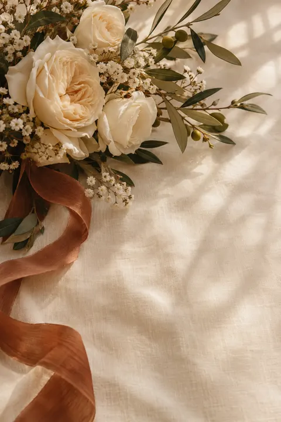

Com alegria, convidamos você

Uma carta para você
27 · 03 · 2027
Com alegria, convidamos você
Memórias
Imagens provisórias. As fotos do casal entram aqui.
Guarde esta data
19h00
Jardim do Ipê — espaço demonstrativo
Trindade — PE
Local fictício, usado apenas nesta demonstração.
Sua presença
Responda por você e pelas pessoas do seu convite. Você revisa a mensagem e escolhe o contato do noivo ou da noiva no WhatsApp.
Há um rascunho salvo neste aparelho.